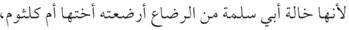
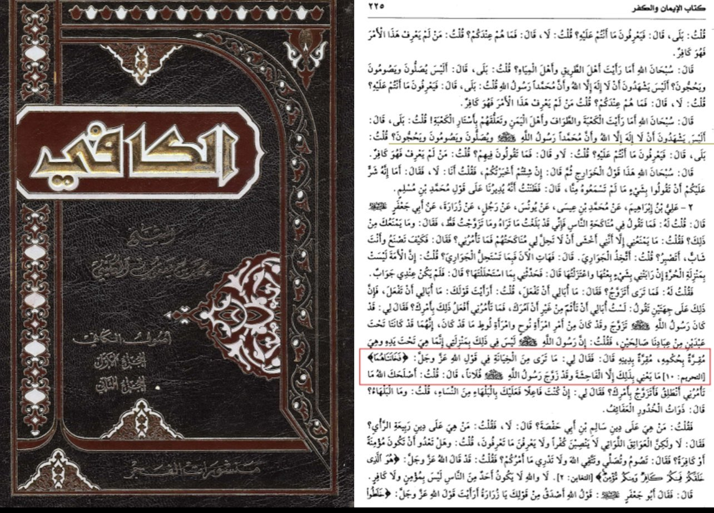
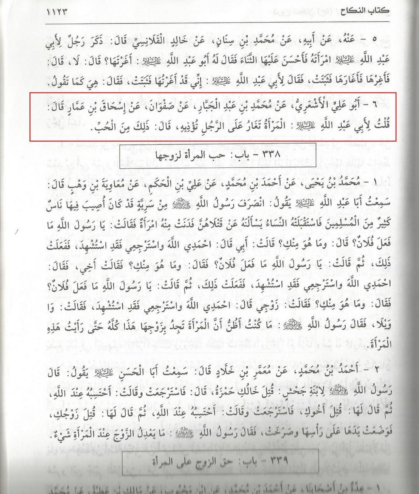

As we know in the Shia books how they talk ill about the mothers of the believers رضي الله عنه (Aisha and Hafsa)
but this Takfir and cursing completely contradicts the word of Allah the Qur’an
Allah said in Surah An Nur Ayah 26:
ٱلْخَبِيثَـٰتُ لِلْخَبِيثِينَ وَٱلْخَبِيثُونَ لِلْخَبِيثَـٰتِ ۖ وَٱلطَّيِّبَـٰتُ لِلطَّيِّبِينَ وَٱلطَّيِّبُونَ لِلطَّيِّبَـٰتِ ۚ أُو۟لَـٰٓئِكَ مُبَرَّءُونَ مِمَّا يَقُولُونَ ۖ لَهُم مَّغْفِرَةٌۭ وَرِزْقٌۭ كَرِيمٌ
“Wicked women are for wicked men, and wicked men are for wicked women. And virtuous women are for virtuous men,
and virtuous men are for virtuous women. The virtuous are innocent of what the wicked say. They will have forgiveness
and an honourable provision.”
——————————————-
But wouldn’t this mean that our beloved Prophet ﷺ was a Munafiq also (Na’oudho’Billa), since he was very aware of his
pious wife’s رضي الله عنه and about their amazing characters but then the Shia might talk about Nuh عليه السلام and
Lut عليه السلام and their wife’s but they got aware of the hypocrisy of their wife’s and then Allah destroyed them
for their hypocrisy
——————————————-
May Allah curse the Shia who curse the mother of the believers Aisha and Hafsa رضي الله عنه
Defense of Aisha and Hafsa (May Allah be pleased with them)
This is a refutation of the infamous Shi’i website “Shia Pen
” which was formerly known as Answering-Ansar.org
; the name of this website was changed because the lies and deception of it were exposed to such an extent
that they had to revise its stuff and come up with a new name.
They start their article writing:
Nasibi attack on Ayesha’s dignity
Before analysing the text let us pose the following questions to those with rational minds:
—-
If two of your relatives went to your home and asked your mother about how to perform Ghusl after sex how would you react?
Is it not an insult to ask such a question to your mother?
How would you feel if your mother then provided a practical demonstration by removing her clothes and taking a bath?
——
With this in mind we invite you to ponder over this hadith:
Abu Salama b. ‘Abd al-Rahman reported: I along with the foster brother of ‘A’isha went to her and he asked about the bath
of the Apostle (may peace be upon him) because of sexual intercourse. She called for a vessel equal to a Sa’ and she took a bath,
and there was a curtain between us and her. She poured water on her head thrice and he (Abu Salama) said:
The wives of the Apostle (may peace be upon him) collected hair on their heads and these lopped up to ears (and did not go beyond that).
Sahih Muslim, Book 003, Number 0626
Perhaps the Nawasib would be so kind as to answer these questions:
As the query was with regards to Ghusl after intercourse, could the two men not have obtained the information from one of the male companions?
As the matter was linked to Sexual intercourse both men must have been married – so why couldn’t they send their respective wives to ask this most delicate question?
Why would A’isha find it necessary to ‘take a bath’ to demonstrate the point could she not have simply relayed actions verbally with her clothes on?
If there was a net between them that presumable acted as purdah does this not defeat the object of A’isha removing her clothes and demonstrating how Ghusl is performed?
The net clearly was NOT very thick, since they were able to observe that A’isha had placed her hair over her head – they could even SEE her ears through it.
Is such a hadith not an insult on the dignity of Hadhrath A’isha?
——
Alhumdulilah we the Shi’a do NOT believe such hadith that attack the dignity of A’isha, it is unfortunate that Nawasib regard such traditions as Sahih.
If those that slander A’isha are kaffir what about those that regard this hadith to be Sahih?
This is a biased observation. The wives of the Prophet ﷺ were all engaged in sharing information about their private
lives with the Messenger since doing such would lead to insight regarding what is prohibited,
what is permissible as well as on other things pertaining to Islam.
Secondly, both the men were mahrams of Aisha رضي الله عنها so there was nothing wrong in them visiting
her rather than someone else. Abu Salama
was fostered by Umm Kulthum bint Abu Bakr
when he was a child, who was the sister of Aisha رضي الله عنها. Hence Aisha رضي الله عنها was his foster
aunt so this Rafidi’s objection is futile:

Because she is the aunt of Abu Salama through breastfeeding, as her sister Umm Kulthum breastfed him
Fath al-Bari 1/314
As we all (should) know, the rules of hijab are relaxed for mahrams.
وقل للمومنات ... ولا يبدين زينتهن الا ... او اخوانهن ... او بني اخواتهن
And tell the believing women to ... not expose their adornment except to their ... their brothers ... their sisters' sons ...
Quran 24:31
Moreover, foster relations are like blood relations:
"فقال " نعم الرضاعة تحرم ما تحرم الولادة
The Prophet (ﷺ) said, "Yes, for foster suckling relations make all those things unlawful which are unlawful through
corresponding birth (blood) relations."
Sahih al-Bukhari 5099
—-
Thirdly, her head was visible and the rest of her body was behind a screen as the narration mentions that she poured water on her head,
and it does not mention anything about the procedure of rest of the bath. We also know this because of other hadith which mention
bathing screens:
تقول ذهبت الى رسول الله صلى الله عليه وسلم عام الفتح، فوجدته يغتسل وفاطمة تستره فقال " من هذه ". فقلت انا ام هاني
I went to Allah's Messenger (ﷺ) in the year of the conquest of Mecca and found him taking a bath while Fatima was screening him.
The Prophet (ﷺ) asked, "Who is it?" I replied, "I am Um-Hani
."
Sahih al-Bukhari 280
Abdullah bin Abbas sent me to Abu Aiyub Al-Ansari and I found him bathing between the two wooden posts (of the well) and
was screened with a sheet of cloth.
I greeted him and he asked who I was.
I replied, "I am Abdullah bin Hunain and I have been sent to you by Ibn `Abbas to ask you how Allah's Messenger (ﷺ) used
to wash his head while in the state of lhram."
Abu Aiyub Al-Ansari caught hold of the sheet of cloth and lowered it till his head appeared before me, and then told somebody
to pour water on his head. He poured water on his head, and he (Abu Aiyub) rubbed his head with his hands by bringing them
from back to front and from front to back and said, "I saw the Prophet (ﷺ) doing like this."
Sahih al-Bukhari 1840
—-
These narrations prove that only the head was visible from the bathing screen. And, there is no reason to assume that she was not
fully clothed behind the screen or that any part of her body was bare except her head. The narration does not mention that she
took off her clothes as this Rafidi wants us to believe and she did not intend to take a complete bath for seeking purity but
to demonstrate washing the head to give clarification about a question that had arisen at that time.
——
They continue:
“Ayesha was accused of adultery by the Sahaba”
The Nawasib have for centuries spread propaganda that Shias accuse Ayesha of committing adultery [naudobillah]
that is a blanat lie on their part. Whilst the Shia do not count Ayesha as amongst the best of the wives of the Holy Prophet (s)
on account of her actions recorded in the Quran and annals of history none of have cast aspersions upon her character.
It seems that the sole motive of the Nawasib in pursuing this propaganda is to hide the names of those who had actually
accused Ayesha of committing adultery because those individuals happened to be Sahaba. Ibn Kathir records in Al-Bidaya wa al-Nihaya,
Volume 4 page 186:
“Then he (prophet) went to the people and addressed and then recited what Allah revealed in Quran, then he ordered that Mastah bin Uthatha,
Hasaan bin Thabit, Hamna bint Jahsh be punished because they were among those who had spread the allegation of adultery”.
It is true that a few of the Sahaba accused Aisha رضي الله عنها but the difference is that they recanted from their original slander
and eventually repented while some Shi’is (not all) still accuse Aisha رضي الله عنها of adultery to this day
(despite the revelation proving her innocence) which has a basis in their own books!
Al-Kulayni the kafir believed that Aisha رضي الله عنها performed zina, and he also quoted a narration as well as
Ali Ibn Ibrahim al-Qummi (his very own teacher) on this matter. Both of these men were pillars for Twelver Shi'ism,
and both believed that the wife of the Prophet whom he never divorced was a perverted woman who committed zina (نعوذ بالله)!

Translation:
The Imam asked: “What do you think of unfaithfulness in the words of Allah, the Most Majestic, the Most Holy,
‘They both were unfaithful to the two of them.’ (66:9) He does not mean thereby anything other than Fahishah (Zina).
The Messenger of Allah had married so and so (Aisha and Hafsa).
Al Kafi 2/402
Grade: Sahih
(according to al-Majlesi )
One of the greatest Shi’i muhaddith, al-Majlesi
authenticates this narration and writes:
Twelfth Hadith: (6): It is authenticated.
His teacher, al-Qummi
the kafir wrote the same thing here
. al-Majlesi
the kafir then comments
that she did zina with Talha رضي الله عنه
(نعوذ بالله)! This Shi’i branding his own books as “propaganda” is laughable at best.
They continue:
Ayesha was not sure if Holy Prophet (s) would tell truth
Imam of Ahl’ul Sunnah Abdul Hamid Ghazzali records the following in his classic Ihya Ulum-id-din:
“Once there was an altercation between the Prophet and Ayesha when they found Abu Bakr as judge. Ayesha said to the Prophet:
‘You speak but don’t speak except truth’. At once Abu Bakr gave her such a slap that blood began to ooze out from her mouth.
Then he said: ‘O enemy, will he speak the truth?’”.
Ihya Ulum-id-din by Imam Ghazzali, Volume 2 page 36, Chapter “The secrets of marriage” – English translation by Maulana Fazlul Karim.
——
This hadith is inauthentic as per IslamQA
:
Badr al-Din al-Ayni said in “Maghani al-Akhyaar” (3/542) regarding this hadith: Rejected.
Ibn Hibban said in “Al-Majrouhin” (2/259): “The hadith is munkar.
This is because the narrator Muhammad ibn al-Zubayr was classed as weak and some hadith scholars even accused him of being a
fabricator (refer to the link above).
There exists no authentic version of this incident where Aisha رضي الله عنها accused the Prophet ﷺ of lying.
They write:
Ayesha and Hafsa tried to create rift between Prophet (s) and his wife Asma by attributing a lie to Prophet (s)
We read in Tabaqat Ibn Saad:
Hamza bin Abi Usaid narrated from his father that he said: ‘Allah’s messenger got married to Asma bin al-Numan al-Jaunia.
He sent me to bring her to him, then Hafsa said to Ayesha or Ayesha said to Hafsa: ‘You color her hair while I will comb her hair’.
Then they both did that, then one of them said to her (Asma): ‘The prophet (pbuh) likes a woman to say to him:
‘I seek refuge in the Lord of you’. When she entered on the prophet and he (prophet) closed the door and advanced his hand to her,
she said: ‘I seek refuge in the Lord of you.”
Tabaqat Ibn Saad, Volume 8 page 145
Ayesha tried to incite Prophet’s wife Malika against Him (s)
We read in Tabaqat Ibn Saad:
Abu Masher said: ‘The prophet (pbuh) got married to Malika bint Kaab, she was very beautiful, thus Ayesha went to her and said:
‘Are you not ashamed of getting married to the killer of your father?’
Tabaqat Ibn Saad, Volume 8 page 148
——
The reports regarding these marriages of the Prophet (ﷺ) are mostly weak that contradict one another on a number of accounts.
Ibn ‘Abd al-Barr notes:
وأما اللواتي أختلف فيهن ممن ابتنى بها وفارقها أو عقد عليها، ولم يدخل بها، أو خطبها ولم يتم له العقد
منها، فقد اختلف فيهن، وفي أسباب فراقهن اختلافًا كثيرًا يوجب التوقف عن القطع بالصحة في واحدة منهن
As to the women about whom there is difference whether marriages with them were consummated before divorce, or their marriages
were solemnized but not consummated or the marriages were proposed but never solemnized and the causes of separation with each of
them there are too many differences so much so that it is required to refrain from positively stating anything with regards to any of them
ابن عبد البر - الإستيعاب
—-
Secondly, al-Waqidi was the sole narrator and authority on both of these reports. And as we (should) know, he was a notorious
liar by consensus of the hadith scholars. Moreover, In al-Waqidi’s report from Abu Ma‘shar al-Sindi (d. 170/787) she was named as Malika bt.
Ka‘b whereas Yazid b. Bakr’s report related by al-Waqidi says she was the daughter of Prophet’s (ﷺ) companion Jundub b. Samra al-Jund‘i.
al-Waqidi, who is the sole authority for each of these reports, however, also related that al-Zuhri and others among his seniors rejected
these report holding that the Prophet (ﷺ) did not marry any woman from Kinana [1].
As we can see, there was no certainty on even their name.
Moreover, regarding Asma bt. Nu‘man al-Jawniyya there is no authentic report which states that she divorced the Prophet (by stating
I seek refuge with Allah from you) because of Aisha and Hafsa رضي الله عنهم, another report even states she divorced due to leprosy [2].
Moreover, the most authentic of reports coming from al-Bukhari’s Sahih clearly shows that she divorced the Prophet (by saying I seek
refuge with Allah from you) after she stated “Can a princess give herself in marriage to an ordinary man?” (Sahih al-Bukhari 7/188).
They continue:
Ayesha and Hafsa tried to create rift between Prophet (s) and his wife Zainab by attributing a lie to Him (s)
We read in Sahih Bukhari Volume 6, Book 60, Number 434:
“Narrated ‘Aisha: Allah’s Apostle used to drink honey in the house of Zainab, the daughter of Jahsh, and would stay there with her.
So Hafsa and I agreed secretly that, if he come to either of us, she would say to him. “It seems you have eaten Maghafir
(a kind of bad-smelling resin), for I smell in you the smell of Maghafir,” (We did so) and he replied.
“No, but I was drinking honey in the house of Zainab, the daughter of Jahsh, and I shall never take it again.
I have taken an oath as to that, and you should not tell anybody about it”.
Aisha and Hafsa, driven by jealousy, agreed to ask him if he ate maghafeer, which is a plant with a foul smell. When Hafsa carried that out,
the Prophet ﷺ decided to forbid honey upon himself. But why did they do this? It was because they were jealous that he was
spending more time with Zaynab رضي الله عنها. It was not hard for those that were close to him to get attached to his nature and
his wives were very much in love with him because of those qualities. It is natural for women to be jealous, especially
if it is multiple of women sharing a husband. Moreover, they clearly repented (as commanded in Q 66:4) and
the Prophet ﷺ still stayed with them despite that.
The nail in the coffin for Shi’is that will not empathize with jealous wives is this authentic narration from Jafar As-Sadiq:

Translation:
Ishaq bin Ammar said to Abu Abdullah: “A woman annoys a man due to her jealousy.”He said: “That is because of her love.”[3]
Footnotes
[1]- al-Tabaqat a-Kabir 8/117-118
[2]- Sirah al-Nawabiyya 2/647
[3]- Al-Kāfī 5/1123